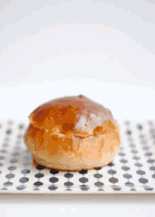

Scones

Sweet and yummy scones!
crummy or fluffy how do you like your scones?
Ingredients
- 1¾ cups all-purpose flour
- 4 teaspoons baking powder
- ¼ cup white sugar
- ⅛ teaspoon salt
- 5 tablespoons unsalted butter
- ½ cup dried currants or raisins
- ½ cup milk
- ¼ cup sour cream
- 1 egg
- 1 tablespoon milk
Steps
- Preheat the oven to 400 degrees F (200 degrees C).
- Sift the flour, baking powder, sugar and salt into a large bowl. Cut in butter using a pastry blender or rubbing between your fingers until it is in pea sized lumps. Stir in the currants. Mix together 1/2 cup milk and sour cream in a measuring cup. Pour all at once into the dry ingredients, and stir gently until well blended. Overworking the dough results in terrible scones!
- With floured hands, pat scone dough into balls 2 to 3 inches across, depending on what size you want. Place onto a greased baking sheet, and flatten lightly. Let the scones barely touch each other. Whisk together the egg and 1 tablespoon of milk. Brush the tops of the scones with the egg wash. Let them rest for about 10 minutes.
- Bake for 10 to 15 minutes in the preheated oven, until the tops are golden brown, not deep brown. Break each scone apart, or slice in half. Serve with butter or clotted cream and a selection of jams - or even plain.
Home